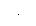

To Select Sweep
· The function generator will not allow the sweep mode to be enabled at the same time that burst or any modulation mode is enabled. When you enable sweep, the burst or modulation mode is turned off.· Front-Panel Operation: You must enable sweep before setting up any of the other sweep parameters. Pressto output a sweep using the present settings for frequency, output amplitude, and offset.· Remote Interface Operation: To avoid multiple waveform changes, enable the sweep mode after you have set up the other parameters.
SWEep:STATe {OFF|ON}